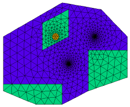

|
water |

  
|
|
water |
|
{ WATER.PDE
This problem shows the flow of water to two wells, through soil regions of
differing porosity. It also displays the ability of FlexPDE to grid features
of widely varying size.
}
title 'Groundwater flow to two wells'
definitions
k { no value is required, as long as it appears later }
s = 0 { no volumetric source }
k1 = 0.1 { high porosity value }
k2 = 1.0e-7 { low porosity value }
sx1 = 0.7 sy1 = 0.4{ well 1 location }
sx2 = 0.5 sy2 = 0.2{ well 2 location }
srad = 0.001 { well radius = one thousandth of domain size }
w = 0.05 { a zoom window size }
px = 0.4 py = 0.4 { percolation pond center }
pr = 0.025 { percolation pond radius }
ps = 1e-4 { percolation rate }
variables
h
equations
h : div(k*grad(h)) + s = 0
boundaries
region 1 { The domain boundary, held at constant pressure head }
k=k1
start(0,0)
value(h)=0 line to (0.25,-0.1)
to (0.45,-0.1)
to (0.65,0)
to (0.95,0.1)
to (0.95,0.4)
to (0.75,0.6)
to (0.45,0.65)
to (0,0.4)
to close
{ Two wells, held at constant draw-down depths }
start(sx1,sy1-srad)
value(h) = -1 arc(center=sx1,sy1) angle=-360
start(sx2,sy2-srad)
value(h) = -2 arc(center=sx2,sy2) angle=-360
region 2 { Some regions of low porosity } k=k2 start(0,0) line to (0.25,-0.1) to (0.45,-0.1) to (0.45,0.05) to (0,0.05) to close
start(0.95,0.1) line to (0.95,0.3) to (0.65,0.3) to (0.65,0) to close
start(0.3,0.3) line to (0.5,0.4) to (0.5,0.6) to (0.3,0.5) to close
region 3 { A percolation pond } k = k2 s = ps { percolation rate } start (px,py-pr) arc(center=px,py) angle=360 |
 |
monitors
contour(h)
plots
grid(x,y)
grid(x,y) zoom(sx1-w/2,sy1-w/2,w,w)
grid(x,y) zoom(sx2-w/2,sy2-w/2,w,w)
contour(h) as 'Head'
contour(h) as 'Head' zoom(0.65,0.35,0.1,0.1)
surface(h) as 'Head'
end